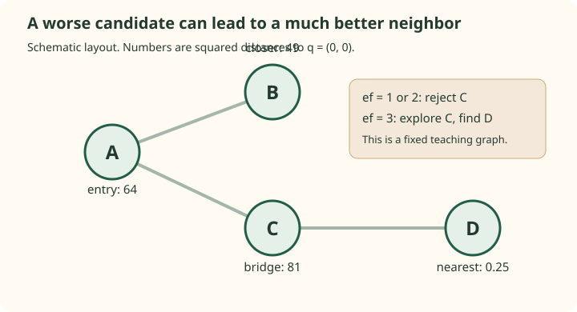

HNSW: understand the graph before tuning it
Hierarchical Navigable Small World graphs store routes between vectors. A query follows those routes to discover candidates without comparing every vector. The hierarchy helps choose a starting point; the base graph and the search budget determine what can be found from there.
This route uses Malkov and Yashunin's HNSW paper for the algorithms and Pinecone's HNSW guide for the introductory Faiss perspective. The explanations, graphs, code, and datasets here are independently constructed.
Separate the mechanisms
| Mechanism | Decision | What to inspect |
|---|---|---|
| Random levels | Which nodes also appear in sparse upper graphs? | Nested membership and the promotion distribution |
| Layer search | Which discovered neighborhoods remain worth exploring? | The candidate heap, retained heap, visited set, and stopping rule |
| Neighbor selection | Which links survive insertion and pruning? | Distance to the inserted node and to already selected neighbors |
| Operating settings | How much graph capacity and search effort can the workload afford? | Recall, latency, memory, updates, and eligibility constraints |
The paper's query algorithm uses greedy searches with ef = 1 in upper layers, then a wider search at layer 0. A promoted node is the same stored vector at several levels. It is not a centroid representing all the nodes below it.
Construction also searches the graph. It uses efConstruction to discover a pool, then chooses connections. Query-time efSearch explores the graph that already exists; it does not rebuild missing links.
A small graph exposes the approximation
Use query $q=(0,0)$ and vectors A=(8,0), B=(7,0), C=(9,0), D=(0.5,0). A connects to B and C; C connects to D. This is a connected, hand-chosen graph, not a dump from a native HNSW build.


The squared distances are 64, 49, 81, and 0.25. Starting at A with retained capacity ef = 1 or 2 rejects C and returns B. With ef = 3, C remains explorable, reveals D, and the returned nearest result changes. K is still one in all three cases.
Those outcomes are checked by the reference tests. The example also shows why ef is not a count of distance calculations: ef = 1 evaluates three vectors, while ef = 3 evaluates four. Seen, expanded, and retained are different states.
Follow the focused notes
The notes below separate geometry, algorithm state, graph construction, native measurements, and application behavior. Keep the ANN guide's exact target and distance conventions fixed as you work through them.
Derive HNSW's nested graph levels and promotion probabilities, trace greedy descent, and distinguish expected hierarchy height from actual query complexity.
Trace HNSW layer search with its candidate min-heap, retained max-heap, visited set, pruning rule, and stopping condition on a fully checked routing example.
Follow HNSW insertion, calculate the diversity heuristic, separate M from adjacency caps, and inspect how reciprocal linking and local pruning affect the graph.
Compare measured HNSW operating points with an exact flat baseline, explain M and ef settings, estimate memory, and reproduce the declared native-index workload.
Define filtered exact neighbors, distinguish routing from result eligibility, verify native filter/deletion behavior, and diagnose where ANN misses affect a RAG answer.
Run the examples rather than trusting a drawing
The pure-Python layer search and its tests need only Python 3. They validate the barrier graph, diversity selection, level arithmetic, score conventions, and a filtered exact reference:
cd blog/rag/ann-methods/hnsw/examples
python3 check_examples.pyThey are teaching code, not a full HNSW index. The helper does not implement insertion, multi-layer storage, concurrent operations, persistence, or native distance kernels. Its graph is supplied explicitly.
For real native indexes, install the declared dependencies in a virtual environment and run the API checks and the reproducible benchmark:
python3 -m venv .venv
. .venv/bin/activate
python -m pip install -r requirements.txt
python check_native.py
python benchmark.pyThe requirements pin Faiss CPU 1.11.0 and hnswlib 0.8.0. The benchmark uses 4,000 standard-normal vectors of width 32 and 128 independently generated queries, K=10, one CPU thread, an exact flat baseline, and explicit build/search settings. It saves full provenance and per-query observations in the recorded results.
The recorded times belong to that small local workload. They are not predictions for a million-document service or a RAG answer's latency. The exact baseline measures neighbor agreement under squared L2, not whether the vectors represent useful documents.
Keep the paper, tutorial, and implementation distinct
The paper describes algorithmic parameters; a library can expose different names or fix some defaults internally. For example, hnswlib 0.8.0 sets an upper-layer adjacency capacity M and a base-layer capacity 2M. That does not mean each new node immediately receives 2M chosen neighbors.
Similarly, the flat storage in IndexHNSWFlat means the stored vectors are not compressed. The graph search is still approximate. In hnswlib, logical deletion and a query filter have documented semantics; Faiss's HNSW variant has different operation support. Check the exact library and version rather than assuming that HNSW is a complete database API.
The paper reports favorable scaling and benchmark results under its studied settings. A shallow expected hierarchy alone is not a worst-case logarithmic query bound. Distance cost, graph connectivity, candidate effort, and data distribution remain part of the workload.
If efSearch is increased, which missing capability stays missing?
It does not create missing graph links, fix incompatible embeddings, add source relevance, or implement an authorization rule. It changes query exploration of an existing index.
Why keep native experiments separate from the four-node graph?
The graph isolates a mechanism whose queues can be inspected completely. Native experiments measure a particular implementation on generated data. Treating either as the other would turn an illustration into an unsupported performance or graph-construction claim.
Source map
- HNSW paper: Algorithms 1, 2, 4, and 5 for insertion, layer search, neighbor diversity, and queries.
- Pinecone HNSW guide: hierarchy intuition, Faiss construction, and parameter experiments.
- hnswlib parameter definitions and the pinned API.
- Faiss index documentation: storage variants and operation support.